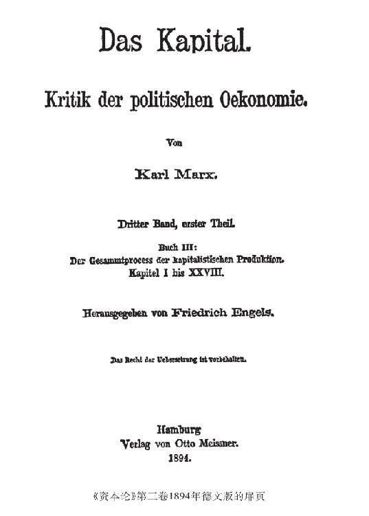

序言
我终于把马克思的主要著作的第三册，理论部分的终结，交给读者了。1当1885年第二册出版的时候，我曾以为，第三册的困难大概只是技术性的，当然，某些极为重要的章节是例外。实际上情况也是这样；但我当时没有想到，正是全书这些最重要的章节会给我造成这么多的困难，同样也没有想到，还有其他一些障碍会如此严重地拖延本书的付排。
首先而且主要妨碍我的，是长期视力衰退，因此，我多年来不得不把写作时间限制到最低限度，直到现在，我在灯光下写东西也只是很偶尔的事情。此外，还有一些别的无法推卸的工作，如马克思和我本人以前各种著作的重新出版和翻译，就是说要订正、作序、增补（而这些工作没有新的研究往往是不可能进行的）等等。首先要提到的是第一册英文版2，我对这个版本的文字负最后责任，所以它占了我许多时间。谁要是稍为注意一下最近10年国际社会主义文献的巨大增长，特别是马克思和我以前的著作的译本的数量，他就会同意我下面的看法：我很庆幸自己只能在有限的几种文字上对译者有所帮助，因而对译者的文字负有进行校订的不容推卸的责任。但是文献的增加不过是国际工人运动本身相应发展的一个象征。而这种发展又赋予我新的责任。从我们开始公开活动的那些日子起，各国的社会主义者和工人在本国进行的运动之间的联络工作，大部分落到马克思和我身上；这项工作随着整个运动的壮大而相应地增加了。但在马克思去世以前，这方面的工作主要由马克思担负，在他去世以后，这项不断增加的工作就落到我一个人身上了。不过在此期间，各国工人政党互相间的直接交往已经成为常规，而且值得庆幸的是，情况越来越是这样；虽然如此，从我的理论工作考虑，人们要求我给予的帮助还是太多了。但是谁要是像我这样50多年来一直在这个运动中从事活动，对他来说由此产生的各项工作就是一种义不容辞的、必须立即履行的义务。在我们这个动荡不定的时代，也像16世纪一样，在公共利益的领域内，只是在反动派方面还有单纯的理论家，正因为如此，这些先生们根本就不是真正的理论家，而只是反动派的辩护士。
我住在伦敦，进行这种党的交往，在冬季主要是靠通信，在夏季大部分是靠面谈。由于这个缘故，并且由于我必须注视着运动在日益增多的国家中的发展以及增加得更快的机关报刊的情况，因此，凡是不容中断的工作都只好到冬天，特别是一年的最初三个月去完成。一个人过了70岁，大脑中的迈内尔特联想纤维工作起来迟钝得令人讨厌，要克服困难的理论工作上的中断造成的影响，再也不像以前那样容易那样迅速了。因此，一个冬天的工作要是没有完成，到下一个冬天很大部分只好重新做起。这种情况发生了，特别在困难最多的第五篇。

读者从下面的叙述将会知道，本册的编辑工作根本不同于第二册。第三册只有一个初稿，而且极不完全。每一篇的开端通常都相当细心地撰写过，甚至文字多半也经过推敲。但是越往下，文稿就越是带有草稿性质，越不完全，越是离开本题谈论那些在研究过程中冒出来的、其最终位置尚待以后安排的枝节问题，句子也由于表达的思想是按照形成时的原样写下来的而越冗长，越复杂。在许多地方，笔迹和叙述非常清楚地显露出，作者由于工作过度而得的病发作了，并且逐渐加重；这种情况起先使他独自进行工作越来越困难，最后竟时常使他的工作完全无法进行。这并不奇怪。在1863年和1867年之间，马克思不仅已经为《资本论》后两册写成了初稿，把第一册整理好准备付印，而且还为国际工人协会3的创立和扩大做了大量的工作。但是，由于这个原因，他的病体的严重症状在1864年和1865年就显露出来了，这使他不能亲手完成第二册和第三册的工作。
我的工作首先是按照原文把全部手稿口授一遍，弄出一个易读的抄本；这个手稿的原文，甚至我也往往费很大劲才能辨认。这件事就花费了相当多的时间。抄完以后，才能开始真正的编辑工作。我把这种编辑工作限制在最必要的范围内。凡是意义明白的地方，我总是尽可能保存初稿的面貌。个别重复的地方，我也没有删去，因为在那些地方，像马克思通常所做的那样，问题总是从另一个角度来论述，或至少是用另一种说法来表达。在我所作的改动或增补已经超出单纯编辑的范围的地方，或在我必须利用马克思提供的实际材料，哪怕尽可能按照马克思的精神而自行得出结论的地方，我都用方括号(1)括起来，并附上我的姓名的缩写。我加的脚注有时没有用括号；但是，凡是注的末尾附有我的姓名的缩写的地方，这个注就全部由我负责。
在这个手稿里面有许多提示，表示这些地方留待以后阐述，可是这些诺言并没有全都实现，这对一个初稿来说是不言而喻的。我让这些地方保持原样，因为它们可以表明作者打算将来进行加工的意图。
现在谈一下详细情况。
对第一篇来说，主要的手稿只有大大压缩才能使用。这份手稿一开始全是关于剩余价值率和利润率的关系的数学计算（构成我们的第三章），而我们的第一章阐述的题目，却是到后来才顺便说到。这里有两个各有对开纸八页的修改稿的开头部分可供利用，但不是始终都写得很连贯。现在的第一章就是由这两个部分编成的。第二章采自主要的手稿。可用于第三章的有一系列未完成的数学计算，此外还有写于70年代的整整一个几乎写满了的笔记本，用方程式来说明剩余价值率和利润率的关系。把第一册的大部分译成英文的我的朋友赛米尔·穆尔，为我整理了这个笔记，他作为剑桥的一位老数学家，担任这项工作是更合适得多的。然后我就按照他的摘要，有时也利用主要的手稿，编成第三章。第四章只有一个标题。但是，因为这一章研究的问题即周转对利润率的影响极为重要，所以由我亲自执笔写成，因而全章的正文都放在括号内。同时我又发现，第三章的利润率公式实际上需要作一些修改才能普遍适用。从第五章起，对本篇其余部分来说，主要的手稿是唯一的来源，虽然在这里也还必须作很多的变动和补充。
以下三篇，除了文字上的修订，我几乎可以完全按照原来的手稿进行编辑。少数几处，大多是关于周转的影响的地方，曾经过加工，以便和我补写的第四章一致起来；这些地方也都放在括号内，并且标上我的姓名的缩写。
主要的困难在第五篇。那里讨论的也是整个这一册最复杂的问题。正当马克思写这一篇时，上面提到的重病又突然发作了。因此，这一篇不但没有现成的草稿，甚至没有一个可以按照其轮廓来加以充实的纲要，只不过是开了一个头，不少地方只是一堆未经整理的笔记、评述和摘录的资料。起初我曾试图像对第一篇在某种程度上已经做过的那样来编辑这一篇，即把空白补足，对只有提示的片断进行加工，使这一篇至少可以接近于作者原来打算写成的那个样子。我至少这样试了三次，但每一次都失败了，由此丧失的时间就是出版推迟的主要原因之一。最后，我看到这条路是走不通的。要是这样做，我就得涉猎这方面的全部浩瀚的文献，而最后搞成的东西，就不会是马克思的著作了。没有别的办法，我只好当机立断，尽可能限于整理现有的材料，只作一些必不可少的补充。这样，我就在1893年的春天完成了这一篇的主要工作。
在各章中，第二十一章至第二十四章大体上已经完成。第二十五章和第二十六章需要对引证的材料加以取舍，并且把从别处发现的材料补充进去。第二十七章和第二十九章几乎完全可以照原稿付印，第二十八章有些地方则必须重新组织。但真正的困难是从第三十章开始。从这章起，不仅要整理引证的材料，而且要整理思路，因为思路不时为插入的句子、离题的论述等等所打断，然后再在别处展开，而且往往是完全附带地展开的。因此，第三十章是经过挪动和删节编成的，而这些挪走和删去的东西在别处得到了利用。第三十一章写得又比较连贯了。但手稿中接着是题为《混乱》的一长篇东西，都是议会关于1848年和1857年危机的报告的摘录。在这些摘录中，汇集了23个实业家和经济学著作家的证词，特别是关于货币和资本、金的流出、过度投机等等的证词，并且有些地方加了简短而诙谐的评注。几乎所有当时流行的关于货币和资本的关系的见解，都在这里用问答的方式表达出来了。马克思打算批判地讽刺地论述这里暴露出来的关于货币市场上什么是货币，什么是资本这个问题上的“混乱”。我经过多次尝试以后，相信要整理好这一章是不可能的；不过，在衔接得上的地方，我还是利用了那些材料，特别是马克思加了评注的那些材料。
接着是整理得相当好的、由我收在第三十二章内的东西。但紧接着这部分的，又是一批议会报告的摘录，谈到各种各样和这一篇有关的问题，其中夹杂着作者或长或短的评语。在快要结束时，这种摘录和评语越来越集中在货币金属和汇兑率的变动问题上，最后又是关于各种各样问题的补充说明。相反地，《资本主义以前的状态》一章（第三十六章）却写得很完整。
我把所有这些从《混乱》起的材料，除了在前面使用过的以外，编成了第三十三章至第三十五章。当然，我不得不插入很多话使之衔接起来。在这些插入的话不只是具有形式的性质时，我都清楚地标明是我加的。我用这个方法终于成功地把作者所有的同这个问题多少有关的论述都收进本文了。删去的不过是摘录的一小部分，它们或者只是重复别处已经说过的事情，或者涉及在手稿中没有进一步阐述的论点。
论述地租的一篇写得完整得多，尽管也决没有完全整理好。这从下面的事实就可以看出：马克思在第四十三章（在手稿中是地租篇的最后一部分）发觉有必要把全篇提纲简略地概括一下。这对编辑工作来说是十分适宜的，因为手稿是从第三十七章开始，接着是第四十五章至第四十七章，然后才是第三十八章至第四十四章。造成最大量工作的，是级差地租II的各个表，以及由于发现第四十三章本来应该考察的这种地租的第三种情形还完全没有加以研究。
马克思为了写地租这一篇，在70年代曾进行了全新的专门研究。他对于俄国1861年“改革”4以后必然出现的关于土地所有权的统计资料及其他出版物，——这是他的俄国友人以十分完整的形式提供给他的，——曾经根据原文进行了多年的研究，并且作了摘录，打算在重新整理这一篇时使用。由于俄国的土地所有制和对农业生产者的剥削具有多种多样的形式，因此在地租这一篇中，俄国应该起在第一册研究工业雇佣劳动时英国所起的那种作用。遗憾的是，马克思没有能够实现这个计划。
最后，第七篇的手稿是完整的，不过也只是初稿，必须先把无限错综复杂的文句拆开，才能付印。最后一章只有一个开头。在这一章，同地租、利润、工资这三大收入形式相适应的发达资本主义社会的三大阶级，即土地所有者、资本家、雇佣工人，以及由他们的存在所必然产生的阶级斗争，应该当做资本主义时期的实际存在的结果加以论述。5这种结论性的总结，马克思通常总要留到快付印的时候再作最后的加工，因为那时最新的历史事件会按照永不失效的规律性为他的理论阐述提供最恰当的现实例证。
本卷的引文和例证，和第二册一样，比第一册少得多。引自第一册的话都注明了第二版和第三版的页码。手稿中凡是引证以前的经济学家的理论叙述的地方，大都只记下姓名，引文本身则要到最后整理时补入。我当然只好让它保持原样。引用的议会报告只有四个，但是每个都利用得相当多。这四个报告是：
1. （下院）《委员会报告》第八卷，《商业危机》第二卷第一部，1847—1848年，证词。 ——引用时题为：《商业危机》，1847—1848年。
2. 上院秘密委员会关于1847年商业危机的报告。报告1848年刊印。证词1857年刊印（因为在1848年刊印被认为过于有损声誉）。——引用时题为：《商业危机》，1848—1857年。
3. 1857年的银行法报告。——1858年的银行法报告。它们是下院委员会关于1844年和1845年银行法的影响的报告，附证词。——引用时题为：《银行法》（有时也题为：《银行委员会》），1857年或1858年。6
第四册——剩余价值理论史7，只要有可能，我就着手去编。
在《资本论》第二册的序言中，我不得不对一些先生们8表示忍让，当时他们大喊大叫，因为他们声称“在洛贝尔图斯那里发现了马克思的秘密源泉和一个卓越先驱者”。我让他们有机会表明，“洛贝尔图斯的经济学到底能够提供什么”；我要他们证明，“相等的平均利润率怎样能够并且必须不仅不违反价值规律，而且反而要以价值规律为基础来形成”。那些当时从主观原因或客观原因出发，但照例决不是从科学根据出发，把这个善良的洛贝尔图斯吹捧为一个经济学上的特大明星的先生们，毫无例外地没有作出回答。相反地，另外一些人倒认为值得下点工夫来研究一下这个问题。
威·莱克西斯教授在批评本书第二册时（1885年《康拉德年鉴》第11卷第452—465页）提出了这个问题，虽然他不想给予直接解决。9他说：
“如果我们对不同种类的商品单个地进行考察，如果它们的价值必须等于它们的交换价值，而它们的交换价值必须等于它们的价格，或必须和它们的价格成比例，那个矛盾〈即李嘉图—马克思的价值规律和相等的平均利润率之间的矛盾〉就不可能解决。”
照他看来，那个矛盾只有在以下的场合才可能解决，那就是：
“放弃用劳动来计量各种商品价值的做法，而只考察商品生产的整体，只考察它在整个资本家阶级和整个工人阶级之间的分配…… 工人阶级从总产品中只获得一定的部分…… 落到资本家手里的另一部分，照马克思说来，形成剩余产品，也就是……剩余价值。然后，资本家阶级的各个成员把这全部剩余价值在他们自己中间进行分配，但不是按照他们所使用的工人的人数，而是按照各人所投的资本的量进行分配；而且把土地也作为资本价值计算在内。”马克思所说的由体现在商品中的劳动单位决定的观念价值，和价格并不一致，但可以“看做是一个移动的起点，由此达到实际价格。实际价格则以等量资本要求等量利润为条件”。因此，有些资本家出售他们的商品时会得到高于这些商品的观念价值的价格，另一些资本家出售他们的商品时会得到低于这些商品的观念价值的价格。“但因为剩余价值的损益会在资本家阶级内部互相抵消，所以，剩余价值的总量同一切价格都和商品的观念价值成比例时一样。”
我们看到，问题在这里远没有得到解决，尽管已经含糊地、肤浅地，然而大体上正确地被提出来了。像作者这样沾沾自喜地以“庸俗经济学家”自居的人能达到这一点，实际上已经出乎我们的意料；如果同我们后面将要说到的那些庸俗经济学家的论述比较一下，这简直令人惊奇。诚然，这位作者的庸俗经济学有点特别。他说，按照马克思的方式当然可以得出资本的利润，但没有理由强迫我们接受这种观点。正好相反。庸俗经济学有一种至少是似乎更有理的说明方法：
“资本主义的出售者、原料生产者、工厂主、批发商、零售商，由于每个人都高于买价出售，因而都按一定的百分比提高商品本身的成本价格，都能从他们的营业中获得利润。只有工人不可能实行类似的追加价值的办法。工人在资本家面前所处的不利地位，使他只好按照等于劳动本身费用的那种价格出卖劳动，也就是为了必要的生活资料而出卖劳动…… 因此，这种价格追加对于那些作为买者的雇佣工人来说，具有十分重要的意义，并且使总产品的一部分价值转移到资本家阶级手中。”
不用多动脑筋，就可以看出：这种对于资本利润所作的“庸俗经济学的”说明，实际上会和马克思的剩余价值理论得出相同的结果；莱克西斯所说的工人所处的“不利地位”，完全和马克思所说的一样；工人都是受欺诈的，因为每个非工人都可以高于价格出售，而工人则不能；就像在英国这里在杰文斯—门格尔的使用价值论和边际效用论10的基础上建立起庸俗社会主义一样，在莱克西斯的理论的基础上可以建立起至少同样似乎有理的庸俗社会主义。我甚至推测，如果乔治·肖伯纳先生知道这个利润理论，他就会双手抱住它，一脚踢开杰文斯和卡尔·门格尔，然后在这块岩石上重新建立起他的未来的费边社教堂。
但是，这个理论实际上只是对马克思的理论的一种改写。这全部追加的价格来自什么地方呢?来自工人的“总产品”。而且是因为“劳动”这种商品，或者用马克思的话来说，劳动力这种商品，必须低于价格出售。因为，如果高于生产费用出售是一切商品的共同属性，如果唯独劳动是例外，总是只能按照生产费用出售，那么，劳动也就正是低于在这个庸俗经济学界中被当做常规的价格出售。由此落到资本家或资本家阶级手中的额外利润就在于下面这个事实，并且归根到底只能来自下面这个事实：工人在再生产他的劳动的价格的补偿物以后，还要生产他没有得到报酬的产品——剩余产品，无酬劳动的产品，剩余价值。莱克西斯在用语的选择上是非常慎重的人。他从来没有直截了当地说过，上述见解就是他的见解。如果这是他的见解，那就很清楚，我们这里碰到的不是一个普通的庸俗经济学家，关于这种人，他自己就说过，他们中的每一个人，在马克思的眼中“充其量不过是一个毫无希望的笨蛋”；我们碰到的是一个伪装成庸俗经济学家的马克思主义者。至于这种伪装是有意识的还是无意识的，那是一个我们在这里不感兴趣的心理学问题。要弄清这个问题的人不妨研究一下，像莱克西斯这样一个无疑很聪明的人，怎么竟然一时也会替复本位制这种荒谬的主张辩护。11
第一个真正试图回答问题的人，是康拉德·施米特博士，见他的著作《在马克思的价值规律基础上的平均利润率》（狄茨出版社1889年斯图加特版）。12施米特试图把形成市场价格的细节既同价值规律又同平均利润率协调起来。产业资本家从他的产品中首先得到他的预付资本的补偿物，然后又得到他没有支付任何报酬的剩余产品。但是，要得到这个剩余产品，他必须把他的资本预付到生产中；也就是说，他必须使用一定量的对象化劳动，才能占有这个剩余产品。因此，对资本家来说，他的这种预付资本就是他为了获得这个剩余产品而付出的社会必要的对象化劳动的量。这一点也适用于其他每个产业资本家。因为按照价值规律，产品是按照生产产品的社会必要劳动的比例来互相交换的，并且因为对资本家来说，制造他的剩余产品的必要劳动，就是那种已经积累在他的资本中的过去劳动，所以，剩余产品是按照生产它们所必需的资本的比例来互相交换的，而不是按照实际体现在它们里面的劳动的比例来互相交换的。这样，每个资本单位所应得的份额，就等于生产出来的全部剩余价值的总和除以所使用的资本的总和。因此，相等的资本在相等的期间内会提供相等的利润，而达到这一点的方法是，把剩余产品的这样计算的成本价格即平均利润，加到那个有酬产品的成本价格上，并按照这个已经提高的价格来出售这两个产品，即有酬产品和无酬产品。这样，尽管施米特认为单个商品的平均价格是按照价值规律决定的，但平均利润率还是形成了。
这种构想非常巧妙，完全是按照黑格尔的样式13作出的，但是它也和黑格尔的多数样式一样，是不正确的。如果价值规律对平均价格也直接适用，那么，剩余产品同有酬产品就没有区别，二者都必须按照制造它们所需要的、已经消耗在它们上面的社会必要劳动的比例来出售。价值规律从一开始就同那种由资本主义思想方法产生的见解相反。按照这种见解，构成资本的那种积累起来的过去劳动，不仅是一定数额的现成的价值，而且因为它作为生产和利润形成的因素，也形成价值，所以是比它自身更大的价值的源泉；价值规律则确认，只有活劳动才具有这种属性。资本家期望按照自己资本的量的比例来取得相等的利润，因而把他们预付的资本看做他们利润的一种成本价格，这是大家知道的。但是，如果施米特利用这个想法，借此来把那个按平均利润率计算的价格同价值规律协调起来，那么，他就把价值规律本身抛弃了，因为他把一种完全同价值规律相矛盾的想法，作为共同起决定作用的因素合并到这个规律中去了。
或者是，积累的劳动和活的劳动一起形成价值。如果是这样，价值规律就不适用了。
或者是，积累的劳动不形成价值。如果是这样，施米特的论证就同价值规律不相容。
施米特在问题已经临近解决的时候走上了这条岔路，因为他认为，他无论如何必须找到一个数学公式，来证明每一单个商品的平均价格是符合价值规律的。不过，虽然他在这里，在已经接近达到目的的地方，走上了歧途，他那本小册子的其余内容却表明，他多么懂得从《资本论》的前两册中得出各种进一步的结论。对于前人一直未能说明的利润率的下降趋势，马克思在第三册第三篇作出了正确的说明，而施米特独自找到了这种说明，这是属于他的荣誉。他还说明了商业利润来源于产业剩余价值，并提出一系列关于利息和地租的论述，从而预先说出了马克思在第三册第四篇和第五篇中所阐述的种种问题，这也是属于他的荣誉。
在以后的一篇文章中（1892—1893年《新时代》第3期和第4期），施米特试图用另一种方法来解决问题。14这种方法可以归结为：平均利润率是由于竞争形成的，因为竞争使资本由利润不足的生产部门转移到有超额利润的生产部门。竞争是利润平均化的重大原因这种看法，并不是什么新东西。但是，施米特试图证明，利润的这种平均化等同于生产过多的商品的出售价格被归结为这样一种价值尺度，这种尺度是社会按价值规律能为这种商品支付的。为什么这样做也不能达到目的，这从马克思在本册所作的说明中可以看得很清楚。
继施米特之后，彼·法尔曼曾尝试解决这个问题（《康拉德年鉴》第3辑第3卷第793页）。15我不谈他对马克思的论述的其他方面所作的评论。这是出自他的误解，即认为马克思进行阐述的地方，就是马克思要下的定义，并认为人们可以到马克思的著作中去找一些不变的、现成的、永远适用的定义。但是，不言而喻，在事物及其互相关系不是被看做固定的东西，而是被看做可变的东西的时候，它们在思想上的反映，概念，会同样发生变化和变形；它们不能被限定在僵硬的定义中，而是要在它们的历史的或逻辑的形成过程中来加以阐明。这样，我们就会明白，为什么马克思在第一册的开头从被他当做历史前提的简单商品生产出发16，然后从这个基础进到资本，——为什么他要从简单商品出发，而不是从一个在概念上和历史上都是派生的形式，即已经在资本主义下变形的商品出发。这一点当然是法尔曼决不可能理解的。我们不妨把这些以及其他一些还会引起种种异议的枝节问题撇在一边，立即转入问题的核心。理论告诉这位作者，在剩余价值率已定时，剩余价值和所使用的劳动力的数量成正比，而经验却告诉这位作者，在平均利润率已定时，利润和所使用的总资本的量成正比。法尔曼对这一点的解释是：利润只是一个习惯现象（他的意思是说，利润只是属于一定的社会形态，并且和这种社会形态同生共死）；利润的存在只同资本联结在一起；当资本强大到足以获得利润的时候，由于竞争，它就只好为自己获得一个对一切资本来说都是相等的利润率。没有相等的利润率，资本主义生产就不可能存在；在这种生产形式的前提下，在利润率已定时，每一单个资本家获得的利润量，只能取决于他的资本的量。另一方面，利润是由剩余价值即无酬劳动构成的。在这里，其数量取决于对劳动的剥削的剩余价值，又怎样转化为其数量取决于所需资本量的利润呢？
“这只是由于：在……不变资本和可变资本的比率最大的一切生产部门，商品高于它们的价值出售，这也就是说，在不变资本和可变资本的比率即c∶v最小的那些生产部门，商品低于它们的价值出售，只有在那些c和v的比率代表一个中位数的生产部门，商品才按照它们的真正价值出售…… 各个价格和它们各自的价值之间的这种不一致，是不是对价值原理的否定呢？绝对不是。因为当一些商品的价格提高到价值以上时，另一些商品的价格就按相同的程度降低到价值以下，所以价格的总额仍然和价值的总额相等……‘归根到底’这种不一致就消失了。”这种不一致是一种“干扰”；“不过，在精确的科学上，人们从来不把可以估计到的干扰看成是对一个规律的否定。”
我们把第九章的有关段落同这一段比较一下，就会发现，法尔曼在这里实际上已经接触到了问题的关键。但是，他这篇如此重要的论文所受到的不应有的冷遇却证明，法尔曼甚至在这种发现以后，仍然需要有许多中间环节，才能完全地、明确地解决这个问题。虽然许多人也对这个问题感兴趣，但是他们总是害怕碰钉子。可以说明这一点的是，不仅法尔曼让他的发现留在不完善的形式上，而且他对于马克思的叙述的理解和他自己在这种理解的基础上对这种叙述提出的一般批评，具有不可否认的缺陷。17
凡是有机会在难题面前出丑的时候，总是少不了苏黎世的尤利乌斯·沃尔弗教授先生。他告诉我们说（《康拉德年鉴》第3辑第2卷第352页及以下几页18），整个问题要由相对剩余价值来解决。相对剩余价值的生产以不变资本比可变资本相对增加为基础。
“不变资本的增加以工人的生产力的增加为前提。但因为生产力的这种增加（由于使生活资料便宜）会引起剩余价值的增加，所以，在不断增加的剩余价值和不变资本在总资本中不断增加的份额之间就形成直接的关系。不变资本的增加，表示劳动生产力的增加。因此，在可变资本不变而不变资本增加时，剩余价值必然增加，这和马克思所说的一致。摆在我们面前的就是这样的问题。”
尽管马克思在第一册的上百个地方说了正好相反的话；尽管说什么马克思认为在可变资本减少时相对剩余价值的增加和不变资本的增加成正比，而这个断言令人如此吃惊，足以使一切议会辞令相形见绌；尽管尤利乌斯·沃尔弗先生写下的每一行都证明，无论是相对地说还是绝对地说，他既毫不理解绝对剩余价值，也毫不理解相对剩余价值；尽管他自己也说：
“乍一看来，好像在这里我们真是处在一大堆的不合理现象中”，
顺便提一下，这是他整篇文章里唯一的一句老实话。但是，这一切又有什么关系呢?尤利乌斯·沃尔弗先生对自己的这种天才发现感到如此骄傲，以致他不禁要为此而给马克思以死后的颂扬，并且把他自己的毫无根据的这一派胡言说成是
“一个新的证据，证明他〈马克思〉对于资本主义经济的批判体系，是多么深刻多么有远见”!
但是，接着就更妙了，沃尔弗先生说：
“李嘉图也曾断言，相等的资本支出产生相等的剩余价值（利润），同样，相等的劳动支出产生相等的剩余价值（按量计算）。问题是：一个怎样同另一个协调一致呢?可是马克思不承认问题的这种提法。他无疑已经（ 在第三册中） 证明，这第二个论断并不是价值规律的必然结果，它甚至同他的价值规律相矛盾，因此……应该干脆推翻。”
于是他要研究，在我们两个人当中究竟是谁错了，是我还是马克思。当然他不会想到，陷在错误当中的是他自己。
如果我对这番高论哪怕再多说一句话，那就是在侮辱我的读者，就是没有完全看透这种可笑的场面。我只补充一点：他过去曾经大胆地说，“马克思无疑已经在第三册中证明了”什么，他现在又同样大胆地乘机散布一种所谓教授中间的流言，说什么康拉德·施米特的上述著作，是“在恩格斯的直接怂恿下”写的。尤利乌斯·沃尔弗先生啊!大概在您生活和活动的那个世界里，公开向别人提出一个问题，然后把答案私下告诉自己的朋友这种做法已经习以为常。我也乐于相信，您能够做出这样的事情。但是，我这一篇序言可以向您证明，在我来往的世界里，人们是不需要干这种卑鄙的勾当的。
马克思刚一去世，阿基尔·洛里亚先生就赶紧在《最新集萃》杂志（1883年4月）上发表了一篇关于马克思的文章19：首先是错误百出的传记，接着是对社会活动、政治活动和写作活动的批评。在那里，他以一种自信态度伪造和歪曲了马克思的唯物主义历史观，这种态度让人推测出他抱有一个巨大的目的。而这个目的达到了：1886年，同一个洛里亚先生出版了《关于政治制度的经济学说》一书，在这本书中，他居然把他在1883年曾经如此完全并如此有意地歪曲了的马克思的历史理论，宣布为自己的发现，而使同时代人大为惊奇。当然，马克思的理论在那里已经被降低到十分庸俗的水平；而且历史的证据和事例充满了连四年级小学生都不容犯的错误；但这一切又有什么关系呢?他用这本书证明，政治状态和政治事件无论何时何地都可以在相应的经济状态中找到说明这样一个发现，根本不是马克思在1845年作出的，而是洛里亚先生在1886年作出的。20至少，他曾经幸运地使他的本国人相信了这一点，自从他那本书用法文出版以后，又幸运地使某些法国人相信了这一点。直到他本国的社会主义者有朝一日从大名鼎鼎的洛里亚身上把他偷来的孔雀羽毛拔掉以前，他满可以在意大利趾高气扬地自称是一种有划时代意义的新的历史理论的创始人。
但是，这不过是洛里亚先生的手法的一个小小的样本。他还向我们保证：马克思的全部理论是建立在自觉的诡辩上的；马克思即使认识到谬误本身，也不会在这些谬误面前停下来，等等。他用一系列类似的下流滑稽故事向他的读者传授必要的知识，要他们相信马克思也是像洛里亚一样的野心家，也像这位帕多瓦的教授一样，为了获得一点小小的舞台效果而玩弄同样小小的下流的骗人花招。在这样干了之后，他现在可以向读者泄露一个重大的秘密了，同时，他也就使我们回到利润率的问题上来。
洛里亚先生说：在马克思看来，一个资本主义工业企业所生产的剩余价值（洛里亚先生在这里把它和利润等同起来）的量，取决于它所使用的可变资本，因为不变资本不提供任何利润。但是，这是同事实相矛盾的。因为实际上利润不是取决于可变资本，而是取决于总资本。马克思自己也看到了这一点（第一册第十一章21），并且承认，从表面上看事实是同他的理论相矛盾的。22但是马克思怎样解决这个矛盾呢?他要自己的读者去看一个尚未出版的续卷。关于这个续卷，洛里亚以前已经对他的读者说过，他认为马克思甚至没有闪过写这个续卷的念头。现在他扬扬得意地喊道：
“可见，我过去的说法不是没有道理的，我曾说过，马克思经常拿第二卷23来威胁自己的反对者，但这第二卷始终没有出版，这第二卷很可能是马克思在拿不出科学论据时使用的一种诡计。”
这样说来，现在谁要是不相信马克思和大名鼎鼎的洛里亚一样善于玩弄科学骗术，那他就真是不可救药了。
总之，我们已经知道，在洛里亚先生看来，马克思的剩余价值理论是同利润率普遍相等这个事实绝对不能相容的。现在第二册已经出版了，我恰好针对这一点而公开提出的问题也随之面世了。24假如洛里亚先生和我们一样是一个羞怯的德国人，他大概会觉得有些尴尬吧。然而他是一个厚脸皮的南方人，出生在气候炎热的地方，他尽可以断言，在那里，不结冰(2)在某种程度上是天然条件。利润率的问题公开提出来了。洛里亚先生曾经公开宣告这个问题不能解决。正因为如此，他现在将要超越自己的能力去公开解决这个问题。
这个奇迹出现在《康拉德年鉴》（新辑第20卷第272页及以下几页）上登载的一篇评述施米特的上述著作的文章中。在他从施米特那里知道了商业利润怎样形成之后，他就豁然开朗了。
“因为价值由劳动时间决定这件事会使那些以较大部分资本投在工资上面的资本家得到利益，所以，非生产〈应当说商业〉资本能够从这种受益的资本家那里强行索取较高的利息〈应当说利润〉，因而在各个工业资本家中间造成一种均等现象…… 比如说，如果工业资本家A、B、C在生产中各使用100个工作日，而使用的不变资本分别是0、100和200，并且100个工作日的工资包含着50个工作日，那么，每个资本家就得到50个工作日的剩余价值，利润率对A来说是100%，对B来说是33.3%，对C来说是20%。但是，如果第四个资本家D积累了300非生产资本，凭此向A抽取40个工作日的价值，向B抽取20个工作日的价值作为利息〈利润〉，资本家A和B的利润率就都会下降到20%，和C的一样了。D有资本300，获得利润60，这就是说，利润率也是20%，和其他几个资本家一样。”
大名鼎鼎的洛里亚用这种惊人的手法，转瞬之间就把那个他在10年前宣告为不能解决的问题解决了。可惜，他并没有把秘密泄露给我们：这种“非生产资本”究竟从何处得到权力，使它不仅可以从工业家手里抢走他们的超过平均利润率的这个额外利润，而且还把这个额外利润塞进自己的腰包，就像土地所有者把租地农场主的超额利润作为地租塞进自己的腰包完全一样。按照这种说法，事实上商人向工业家征收一种同地租完全类似的贡赋，并由此确立平均利润率。当然，在一般利润率的形成上，商业资本是一个极为重要的因素，这几乎是尽人皆知的。但是，只有从内心深处瞧不起全部经济学的写作冒险家，才敢于断言商业资本具有一种魔力，能够在一般利润率尚未确立以前，就把超过一般利润率的全部超额剩余价值吸取过来，并把它转化为自己的地租，而在这样做的时候并不需要有任何土地所有权。同样令人惊奇的断言是：商业资本能够发现那些其剩余价值恰好只和平均利润率相一致的工业家，并且它引以为荣的是，不要任何代价，甚至不要任何手续费，就替这些工业家销售产品，以使马克思价值规律的这些不幸牺牲者的运气多少变得好一些。一个什么样的魔术师才能想象得出马克思竟需要玩弄这样一套可怜的把戏!
但是，只有当我们把我们这位大名鼎鼎的洛里亚同他的北方竞争者们，例如同那个也不是昨天才出名的尤利乌斯·沃尔弗先生相比较的时候，我们的洛里亚才放射出他的全部光辉。在这位意大利人旁边，沃尔弗先生甚至在他的巨著《社会主义和资本主义社会制度》中，也多么像一个狂吠不已的家伙啊!和这位大师的高贵的放肆态度相比，沃尔弗先生是多么笨拙，我几乎想说是多么谦逊啊!这位大师就是用这样的态度断言：不言而喻，马克思不多也不少，和一切其他的人一样，是一个恰好和他洛里亚先生本人一样的自觉的诡辩家、谬论家、吹牛家和江湖骗子；并且马克思明明知道不可能也不打算写一个什么续卷，但每当陷入困境时，总是欺骗公众，说要在一个续卷中完成他的理论!极端的厚颜无耻，混不下去时又像鳗鱼一样滑掉；挨了别人的脚踢还充英雄好汉；抢占别人的研究成果；死皮赖脸地大做广告；依靠同伙的吹捧捞取声誉——在这一切方面，还有谁比得上洛里亚先生呢？
意大利是典型之邦。自从现代世界的曙光在那里升起的那个伟大时代以来，它产生过许多伟大人物，从但丁到加里波第，他们是无与伦比的完美的典型。但是，遭受屈辱和异族统治的时期，也给它留下了若干典型的人物脸谱，其中有两个经过特别刻画的类型：斯加纳列尔和杜尔卡马腊。我们看到，在我们这位大名鼎鼎的洛里亚身上体现着这二者的典型的统一。
最后，我必须把我的读者引到大西洋的彼岸去。纽约的乔治·斯蒂贝林医学博士先生，也找到了问题的答案，并且是一个极其简单的答案。因为它是这样简单，所以在大洋两岸都没有人愿意予以承认。对此他非常恼怒，于是写了数不尽的小册子和报刊文章，在大洋两岸极其痛苦地诉说不平。虽然有人已经在《新时代》25上指出他的全部答案是以一个计算上的错误为基础的，但他毫不在乎，说什么马克思也曾有过计算上的错误，但是在许多事情上是正确的。那就让我们看一下斯蒂贝林的答案吧。
“假定有两个工厂，用相同的资本进行相同时间的作业，但不变资本和可变资本的比率不同。假定总资本（c＋v）＝y，再用x来表示不变资本和可变资本比率上的差。对工厂I来说，y＝c＋v，对工厂II来说，y＝（c－x）＋（v＋x）。因此，工厂I的剩余价值率＝m/v，工厂II的剩余价值率＝m/(v+x)。我把总资本y或c＋v在一定时间内所增殖的全部剩余价值（m）叫做利润（p），就是说p＝m。这样，工厂I的利润率是p＝y或m/c+v；工厂II的利润率同样是＝p/y或m/(c-x)+(v+x)，即同样是m/(c+v)。因此，这个……问题就这样得到了解决：在价值规律的基础上，在资本相等，时间相等，但活劳动的量不等时，由于剩余价值率的变动，会产生出一个相等的平均利润率。”（乔治·斯蒂贝林《价值规律和利润率》纽约约翰·亨利希版）
尽管以上的计算很巧妙，很清楚，但我们还是不得不向斯蒂贝林博士先生提出一个问题：他怎么知道工厂I生产的剩余价值总量恰好等于工厂II生产的剩余价值总量?关于c、v、y和x，也就是关于计算上的其他一切因素，他清楚地告诉我们说，它们对这两个工厂来说都是相等的，但关于m却只字不提。但是无论如何不能因为他用代数符号m来代表这里的两个剩余价值量，就得出它们是相等的。相反地，这一点正好是他应当加以证明的，因为斯蒂贝林先生把利润p和剩余价值也直接等同起来了。这里只可能有两种情况：或者是，这两个m相等，每个工厂生产同样多的剩余价值，因此在总资本相等时，也生产同样多的利润量，如果是这样，斯蒂贝林先生就是从一开始把他应当证明的事情当做前提了；或者是，一个工厂比另一个工厂生产更多的剩余价值，如果是这样，他的全部计算就站不住脚了。
斯蒂贝林先生不辞劳苦，不惜工本，在他的这种错误计算的基础上，作出了堆积如山的计算，公之于众。我可以向他作出使他放心的保证，几乎他的所有计算都是错误的，即使有例外，那它们所证明的事情也完全不是他所要证明的事情。例如，他对1870年和1880年美国的国情调查材料作了比较，确实证明了利润率的下降，但他对于利润率下降的说明却是完全错误的，并且他认为，马克思关于始终不变的固定的利润率的理论必须根据实践来加以修正。但是，我们从这个第三册的第三篇中可以看到，这里所说的马克思的“固定的利润率”，纯粹是捏造出来的；造成利润率下降趋势的原因，也同斯蒂贝林博士所说的正好相反。斯蒂贝林博士先生的用意显然是非常好的，但是一个人如果想研究科学问题，首先要学会按照作者写作的原样去阅读自己要加以利用的著作，并且首先不要读出原著中没有的东西。
全部研究的结果是：甚至在这个问题上，也只有马克思学派才取得了一些成就。如果法尔曼和康拉德·施米特读到这个第三册，他们就会对于他们各自的那部分工作感到完全满意了。
弗·恩格斯
1894年10月4日于伦敦
(1) 本卷用六角括号〔 〕。——编者注
(2) “不结冰”的原文是“Unverfrorenheit”，也有“厚颜无耻”的意思。——编者注
1 《资本论》第三卷系统地阐述了资本主义生产的总过程，分析了剩余价值转化为利润和利润转化为平均利润，商品价值转化为生产价格，揭示了工人创造的剩余价值的不同表现形式，以及全部剩余价值在产业资本家、商业资本家、借贷资本家和土地所有者之间的分配，说明在资本主义制度下，工人不仅受直接雇用他的资本家的剥削，而且受整个资本家阶级的剥削。本卷是《资本论》理论部分的终结，恩格斯说这一卷“是光彩夺目的，它将给人以雷鸣电闪般的印象”（见《马克思恩格斯全集》中文第1版第36卷第336页）。
第三卷的理论是逐步形成的。在1857—1858年写的《资本论》第一个手稿中，马克思开始找到了解决第三卷一些重要理论问题的钥匙。他论述了剩余价值与它的转化形式利润之间的关系，研究了利润和利润率形成的机制，还第一次科学地说明了利润率下降趋势这一资本主义生产的重要规律。在1861—1863年的手稿中，第三卷的理论内容得到进一步的充实和完善。马克思提出和解决了涉及第三卷理论的重大问题，包括成本价格、生产价格和平均利润、商业资本和货币资本、地租、收入及其源泉等问题。这些成果为第三卷的理论内容和结构打下了基础。
在1863—1865年期间，马克思分别撰写了《资本论》三册的手稿。马克思在写完第一册手稿之后，从1864年下半年开始到1865年底，交叉着写了第三册和第二册（第I稿）的手稿。据考证，第三册前半部分手稿（剩余价值转化为利润；利润转化为平均利润；利润率趋向下降的规律）写于1864年下半年，1865年上半年写的是第二册手稿（第I稿），1865年下半年写成了第三册后半部分手稿（商业资本、货币资本、地租等）。这部第三册手稿是马克思生前留下的《资本论》第三册的唯一完整的手稿，被编号为第I稿，成为恩格斯后来编辑出版《资本论》第三卷的基础。1867年9月《资本论》第一卷出版后，马克思继续从事第二册和第三册手稿的写作。马克思逝世前，他主要写了第二册的各个手稿，属于第三册的手稿只有该册第一章的两个修改稿的开头部分，被编号为第II稿和第III稿，还有一个用方程式来说明剩余价值率和利润率关系的手稿。马克思晚年还为他的地租理论收集了美国和俄国土地关系的新材料，准备加工以后补充到手稿中，但计划未能实现。
马克思逝世后，恩格斯承担了《资本论》后两卷的编辑出版工作，把第二册编成第二卷，第三册编成第三卷。1885年2月恩格斯完成第二卷的编辑工作后，立即着手辨认和口授第三卷的手稿，到7月底形成了一部“誊清稿”。他以第三册第I稿为基础，吸收第II、III稿的成果，并请人整理和简化了方程式手稿，吸收到正文中。他还结合马克思逝世后出现的经济现象补写了某些片断。原手稿分为七章，恩格斯将它编成七篇五十二章，并在卷末写了两个增补：《价值规律和利润率》和《交易所》。关于恩格斯对各篇章内容的具体编辑工作，他自己在第三卷《序言》中作了较详细的说明。恩格斯本想尽早完成第三卷的编辑出版工作，但领导国际工人运动的重担、各种学术和著述活动以及健康状况的恶化，使这项工作历时十年才完成，1894年11月《资本论》第三卷在汉堡出版。
本卷的中译文和《马克思恩格斯全集》中文第2版第46卷一致，是在《马克思恩格斯全集》中文第1版第25卷译文的基础上，根据民主德国统一社会党中央马列主义研究院编辑出版的《马克思恩格斯全集》德文版第25卷并参考《马克思恩格斯全集》历史考证版第2部分第15卷重新校订的。——3。 2 《资本论》第一卷英文版是由赛·穆尔和爱·艾威林根据德文第三版翻译、最后由恩格斯审定的。1887年初由英国出版商威·斯·桑南夏恩分两册在伦敦出版。——3。
3 国际工人协会简称国际，后通称第一国际，是无产阶级第一个国际性的革命联合组织，1864年9月28日在伦敦成立。马克思参与了第一国际的创建，是它的实际领袖，恩格斯参加了对国际后期的领导工作。在马克思和恩格斯的指导下，第一国际领导了各国工人的经济斗争和政治斗争，积极支持了被压迫民族的解放运动，坚决地揭露和批判了蒲鲁东主义、巴枯宁主义、拉萨尔主义、工联主义等机会主义流派，促进了各国工人的国际团结。第一国际在1872年海牙代表大会以后实际上已停止了活动，1876年7月15日正式宣布解散。第一国际的历史意义在于它“奠定了工人国际组织的基础，使工人做好向资本进行革命进攻的准备”（见《列宁全集》中文第2版第36卷第290页）。——7。
4 俄国1861年改革指俄国废除农奴制度的改革。19世纪中叶，农奴制严重地阻碍资本主义的发展，1853—1856年克里木战争（见注221）失败后，革命形势发展，农民运动日益高涨。亚历山大二世政府被迫颁布《关于农民脱离农奴依附关系的一八六一年二月十九日法令》。该法令规定农民有人身自由，地主不得买卖或赠送农奴；农民有权支配自己的财产，进行诉讼和从事工商业活动，但土地仍归地主所有，农奴要获得上述自由必须交付高额赎金。这次改革虽然维护了地主阶级的利益，但仍为资本主义发展创造了条件。——10。
5 马克思1868年4月30日给恩格斯的信中有对《资本论》第三卷内容的介绍，在结尾的第VII点中谈到关于资本主义社会中与三种收入形式相适应的三大阶级必然产生阶级斗争的观点。——11。
6 指下列报告：《银行法特别委员会的报告。附委员会会议记录、证词、附件和索引》，根据下院决定于1857年7月30日刊印；《银行法特别委员会的报告。附委员会会议记录、证词、附件和索引》，根据下院决定于1858年7月1日刊印。——12。
7 恩格斯未能实现把《剩余价值理论》作为《资本论》第四卷出版的计划。1905—1910年卡·考茨基编辑出版了《剩余价值理论》德文版。1954—1961年苏共中央马列主义研究院出版了《剩余价值理论》俄文版；德国统一社会党中央马列主义研究院于1956—1962年以俄文版为依据出版了德文新版本。《剩余价值理论》作为《马克思恩格斯全集》俄文第二版第26卷（三册）分别于1962、1963和1964年出版。《剩余价值理论》的第一个中文译本是郭大力根据考茨基的版本翻译的，书名为《剩余价值学说史》，共三卷，1949年6月在长春由新中国书局出版发行。《剩余价值理论》现收入《马克思恩格斯全集》中文第二版第33—35卷。——12。
8 指德国讲坛社会主义者—国家社会主义者及其追随者，特别是指鲁·海·迈耶尔、泰·科扎克以及阿·瓦格纳。——12。
9 威·莱克西斯在《康拉德年鉴》，即《国民经济和统计年鉴》新辑1885年第11卷发表的评《资本论》第二卷的文章为《马克思的资本理论》。关于莱克西斯的这篇文章，还可参看恩格斯1888年10月8日和1895 年3月12日给康·施米特的信、1886年11月9日给尼·弗·丹尼尔逊的信。——12。
10 “边际效用”论是产生于19世纪70年代的资产阶级庸俗价值理论。它的创始人是奥地利经济学家卡·门格尔、英国经济学家和哲学家斯·杰文斯和法国经济学家莱·瓦尔拉。这一学派的理论与马克思的劳动价值论相对立，其基础是“边际效用”价值论。按照这种理论，价值的基础不是社会必要劳动，而是商品的所谓边际效用，这种边际效用反映了对满足购买者最不迫切需要的商品的效用的主观评价。“边际效用”论的拥护者认为劳动价值的理论不正确，他们说，实际上价格和价值是不一致的，价值通常由一些偶然的、与生产无关的情况，诸如商品稀少之类的情况所决定，从而掩盖了资本主义制度下对雇佣劳动的剥削这一事实。在现代资产阶级政治经济学中，“边际效用”论直到20世纪初仍广为流传。——14。
11 复本位制是金银两种金属同时起货币作用的币制。关于威·莱克西斯为复本位制辩护的主张，见他的《货币本位问题的批判分析》（1881年《德意志帝国立法、行政和国民经济年鉴》第5年卷第1分册第87—132页）。——15、357。
12 关于康·施米特的这本著作，见恩格斯1888年10月8日、1889年10月17日、1890年4月12日和1895年3月12日给康·施米特的信、1889年11月15日给奥·倍倍尔的信、1889年4月20日和1891年9月28日给卡·考茨基的信。——15。
13 指黑格尔关于概念和现实的关系，即所谓思维和存在的同一性的观点。恩格斯在1895年3月12日给康·施米特的信中在分析施米特关于利润率和价值规律的观点时也谈到了黑格尔关于概念和现实的关系。——15。
14 指康·施米特《平均利润率和马克思的价值规律》一文，见1892—1893年《新时代》第11年卷第1册第3期第68—75页；第4期第112—124页。——17。
15 指彼·法尔曼《马克思价值理论批判》一文，见1892年《国民经济和统计年鉴》第3辑第3卷第793—808页。——17。
16 鉴于有人认为《资本论》第三卷似乎同第一卷存在矛盾，恩格斯在本卷的增补《价值规律和利润率》中再次回到对《资本论》出发前提即简单商品生产的考察。见本卷第1006—1027页。——17。
17 关于彼·法尔曼的文章，见恩格斯1891年12月27日和1895年1月3日给卡·考茨基的信、1892年9月12日和1895年3月12日给康·施米特的信、1894年12月4日给弗·阿·左尔格的信。——18。
18 指尤·沃尔弗《马克思的平均利润率的谜》，见1891年《国民经济和统计年鉴》（即《康拉德年鉴》）第3辑第2卷第352—367页。
关于沃尔弗的文章，见恩格斯1891年9月28日给卡·考茨基的信、1891 年11月1日和1892年2月4日给康·施米特的信。——19。
19 指阿·洛里亚《卡尔·马克思》一文，见1883年4月《科学、文学和艺术最新集萃》第38卷第7期第509—542页。
关于洛里亚的文章，见恩格斯1883年4月底给洛里亚的信、1890年4月12日给康·施米特的信。——20。
[20] 关于经济关系对政治关系来说归根结底是第一性的这一发现，事实上在马克思恩格斯写于1844年的《神圣家族》第四章和第五章开头部分以及写于1845—1846年的《德意志意识形态》的《一 费尔巴哈》（《马克思恩格斯文集》第1卷）中，就有明确的阐述。——21。
21 这里的第一册指阿·洛里亚使用的《资本论》第一卷法文版，其中第十一章相当于德文版第九章《剩余价值率和剩余价值量》。——21。
22 参看《马克思恩格斯文集》第5卷第371—372页。——21。
23 马克思在1867年写的《资本论》第一版序言中说：《资本论》第二卷“将探讨资本的流通过程（第二册）和总过程的各种形式（第三册）”。这里所说的第二卷后来由恩格斯编为两卷出版，这就是《资本论》第二卷和第三卷。见《马克思恩格斯文集》第5卷第13页。——22。
24 指恩格斯为马克思《资本论》第二卷所写序言的结尾处（见《马克思恩格斯文集》第6卷第24—25页）。——22。
25 指《评斯蒂贝林先生〈论资本密集对工资和劳动剥削的影响〉》一文，见1887年《新时代》第5年卷第3期第123—127页。——24。